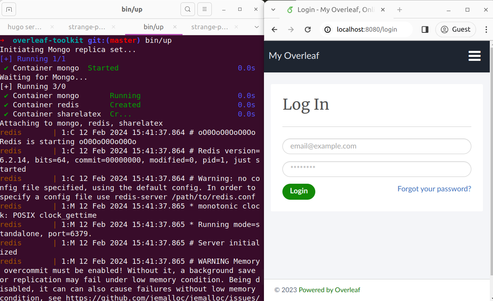
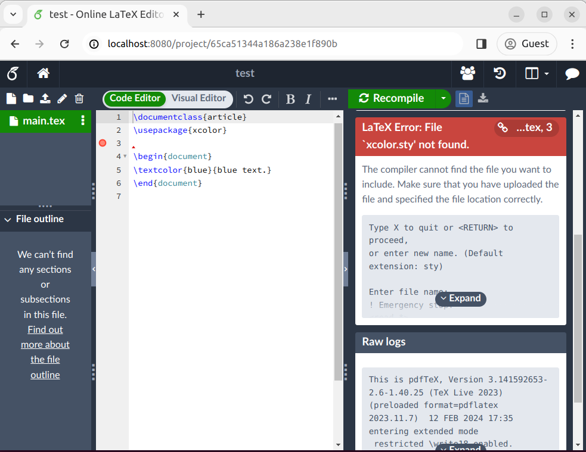
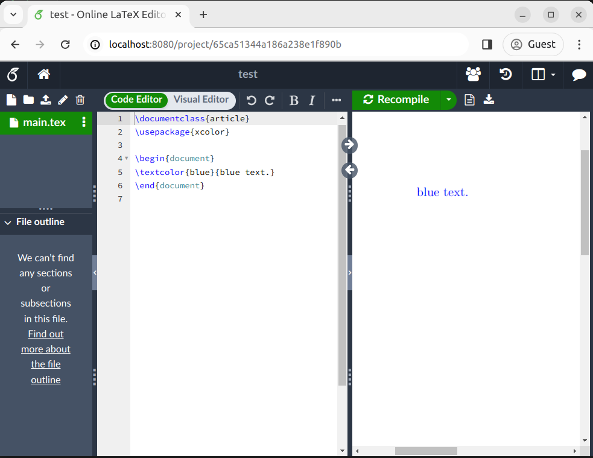

自架 Overleaf (1)
[TOC]
前言
感謝吾友 James Hsu 頻頻 掛念 鄙人的部落格，期望以此文感謝他對我的重視。
在此也先為了這施工中的醜醜部落格道歉。
正文
Overleaf 是一個線上的 LaTeX 編輯器，不需要自己搞複雜的環境就可以寫 LaTeX，而且還支援像 HackMD 或是 Google Docs 那種多人同時連線編輯的功能，但 Overleaf 免費版的功能有一定的限制，我自己最明顯感受到的限制是同一個 project 只能加一位協作者，不然就是得要開啟 sharing link。試想大部分的課程 project 都要求 3 人一組，如果要用 overleaf 的話就只能開 sharing link，一想到如果連結不小心外流的話東西就有可能被刪光光，緊張到都睡不著了（才沒有）。自架的 overleaf 就沒有這種人數上限，有多少朋友就加多少協作者，沒問題的。
本篇我所修改過的 code 都可以在 我的 repo 找到。
做功課：Overleaf Community Edition
Overleaf 的 GitHub 上有兩個 repo:
- overleaf: Overleaf 整個服務的 source code
- overleaf-toolkit: 自架 Overleaf 的便利工具
在 Overleaf 的 Wiki 上有關於硬體設備的建議：
- 最低要求 2 core 和 3 GB memory
- … 大約支援 5 個使用者同時在線
- 每 5~10 個使用者大約需要 1 core 和 1 GB memory，「大約」而已
- LaTeX 是一個 single threaded program，所以編譯 PDF 的速度取決於單一 cpu 的強度
- … 還是存在著一種可能性是自架的 Overleaf 的編譯速度比 overleaf.com 還來得慢
總而言之，Overleaf 的 Wiki 上有很多重要的資訊可以仔細看。這邊不會全部介紹。
架一個 Self-hosted Overleaf
要在自己的機器上跑起一個 Overleaf server，有兩種方式。第一種是從 Overleaf 的 source code（剛剛的第一個 repo）開始，依照他的指示包成一個 docker image；第二種是用 overleaf-toolkit（剛剛的第二個 repo）裡的工具直接 pull 一個 官方 docker image 下來，用 toolkit 裡面的 script 就馬上可以跑了（理論上）。
依照 toolkit 的 quick start guide，執行下面指令：
git clone https://github.com/overleaf/toolkit.git overleaf-toolkit
cd overleaf-toolkit
bin/init
bin/up

Note 1: 我有在 Proxmox VE 開一台虛擬機測試，如果執行上面指令看到
bin/up輸出 mongo service 的狀態是 error 而不是 running 或 healthy，可以打bin/docker-compose logs mongo來看 mongo service 的錯誤訊息，會發現可能是 mongo 抱怨 cpu 沒有支援 AVX 的指令集。Google 到的解決方法是把 Proxmox VE 虛擬機的 cpu type 設定成 host，因為預設的 qemu cpu 沒有支援 AVX。
Note 2: 如果遇到 mongo service 一樣還是開不起來，錯誤訊息有
IllegalOperation或是/etc/my_init.d/什麼的，那可能是遇到 mongo db 沒有正常 initialize 的問題。解決方法請參考 issue。
幾個你可能會想要改的東西（全部資訊請看 wiki 和 wiki）：
config/overleaf.rc裡面的SHARELATEX_LISTEN_IP和SHARELATEX_PORT，如果你想要改 Overleaf listen 的 IP 跟 portconfig/variables.env裡面的SHARELATEX_APP_NAME，如果你想要改 Overleaf 在登入頁面的 title
接下來根據 quick start guide 的說法，我們需要前往 launchpad 開通第一個 admin 帳號。開通之後就可以開始測試（亂玩）Overleaf community edition 的功能了。
來亂改吧 (X) 來加新功能吧 (O)
可以發現到 Overleaf community edition 預設的功能其實相當有限且不便，例如：
- 要新增使用者只能用 admin 使用者登入進到 admin panel 裡面去註冊新使用者的 email，而且新使用者必須透過 one-time password reset URL 才能設定自己的密碼
- 好啦其實在 官方 wiki 有講到，雖然說好像可以用
server-ce-scripts底下的 script 去新增使用者就是了，但一樣還是要用 one-time password reset URL 才能設定密碼
- 好啦其實在 官方 wiki 有講到，雖然說好像可以用
- 預設有裝的 LaTeX 套件很少，畫圖常用的像是 tikz 是沒辦法使用的，要額外安裝
- 好啦其實在 官方 wiki 有講到，可以用
bin/shell進到 Overleaf 的 docker container 裡面去手動安裝套件，但這樣每次重新 deploy 都要手動再去跑一次安裝套件
- 好啦其實在 官方 wiki 有講到，可以用
- admin 使用者能查看的 admin panel 功能超陽春，連個 server 總使用者數 / 總 project 數都看不到
- 好啦其實還是可以用
bin/mongo進到 mongodb 的 shell，直接從 db 裡面下指令撈這些資訊
- 好啦其實還是可以用
- 當你把一個使用者加入 project 的協作者時，Overleaf 會在畫面上顯示「已寄出邀請連結至信箱」，但問題是我們沒有設定 Overleaf 可以寄出 email，所以你邀請的使用者永遠沒辦法透過邀請連結來加入你的 project
- 好啦其實該使用者在登入之後還是可以從 project 列表的頁面看到你有邀請他，他可以在那邊點選「接受邀請」
- admin 使用者能查看所有在這台 Overleaf server 上的 project，即便這個 project 沒有被設為公開，或該 admin 使用者沒有被加入這個 project 的共用名單
- 你可能想要在 Overleaf 上加好友或傳送訊息給別人之類的（好你可能也不想）
裝 LaTeX 的各種套件
在開始之前，我們先來編看看一個 LaTeX 檔案好了。登入我們自己架的 Overleaf 之後開啟一個空白 project，輸入以下的簡單 .tex 檔案：
\documentclass{article}
\usepackage{xcolor}
\begin{document}
\textcolor{blue}{blue text.}
\end{document}
xcolor 是一個很基本的套件，可以用來設定文字顏色，但我們自己架的 Overleaf server 吐了 LaTeX Error: File 'xcolor.sty' not found. 給我們：

Overleaf 的 LaTeX 套件是用 tlmgr (TeX Live package manager) 來管理的。我們可以參考 官方 wiki 的教學手動進到 Overleaf 的 container 裡面裝套件，但這樣做的話每次重新 build 或更新 overleaf 版本的時候就都要手動重複一樣的工作，聽起來就超糟的。
overleaf-toolkit 其實有幫我們寫好 docker compose 的 yaml 檔了，所以我們執行 bin/up 的時候才能這麼順暢地把 Overleaf server 跑起來。事實上，如果去讀 toolkit 的 source code 的話，會發現其實我們是拿 官方 docker image 來跑。也就是說，我們其實可以自己寫一個 Dockerfile，以官方 image 為基底加上一些我們自己的新功能或 patch，最後再讓 toolkit 去把我們的新 image 跑起來，這樣就可以做到我們想要的各種新功能了！
那馬上就來把手弄髒吧～
首先，在 config/ 底下新增一個 docker-compose.override.yml 的檔案，裡面放這些內容：
---
version: '2.2'
services:
sharelatex:
image: sharelatex/sharelatex:chiffon-1.0
build:
context: .. # the root directory of the project
dockerfile: ./src/Dockerfile
args:
SRC_PATH: ./src
Note:
args: SRC_PATH: ./src這兩行的功能跟後面新增其他功能有關，雖然跟現在無關但為了方便起見現在一起先加到檔案裡。
接著在 project root directory 新增一個資料夾 src/，在裡面加入一個 Dockerfile，放以下內容：
FROM sharelatex/sharelatex:4.2.2
RUN tlmgr update --self --all
# install full latex packages, takes VERY VERY long time
RUN tlmgr install scheme-full
Note 1:
tlmgr install scheme-full會把 所有 TeX Live 的套件 全部 安裝好，這會花上 很久很久（在我的電腦上要跑 40 分鐘）。如果你不想裝所有的套件，可以先看看tlmgr info schemes或是tlmgr info collections的輸出來決定自己是不是只想要裝某些 subset 的套件。例如你可能只想要tlmgr install scheme-small或是tlmgr install collection-xetex collection-langcjk collection-mathscience而已。
Note 2: 懶人包：把
tlmgr install scheme-full改成tlmgr install scheme-small可以大幅減少你的 docker build 時間，也可以讓接下來的教學文順利 demo 成功。
這時你的資料夾結構可能長這樣：
overleaf-toolkit/
├── .github/
├── bin/
├── config/
│ ├── docker-compose.override.yml
│ └── ...
├── data/
├── doc/
├── lib/
├── src/
│ └── Dockerfile
├── .gitignore
└── ...
接下來就可以執行 bin/docker-compose up --build 來重新 build 一次我們的 Overleaf service 了（如果你想要 detach from docker-compose 的話，可以加 -d 的參數。總之就是把 bin/docker-compose 當一般的 docker compose 來用即可）。
重開好之後再登入，重新編譯一次我們的檔案：

輕鬆簡單是吧（其實也還好
總結 & 預告
在這篇文章中，我介紹了自架 Overleaf 的方法，並鋪陳了如何讓 overleaf-toolkit 使用我們自己 patch 過後的 docker image。在接下來的文章，我要介紹如何修改 Overleaf 的登入驗證邏輯，以達到「首次登入即註冊」的功能。說不定顯示 project invitation link 的功能也會一併放送給大家。
感謝閱讀。
後記
本來在本文中想要用 LaTeX 語法打出 LaTeX 的 logo，但要讓 hugo 顯示 $\LaTeX$ 好像沒有那麼單純。隨手搜尋了一下 “enable latex in hugo”，竟發現搜尋結果第三項是另一友人 Vincent Hsieh，讓我驚覺身旁的友人都各自有其事業，我也該更努力一點。